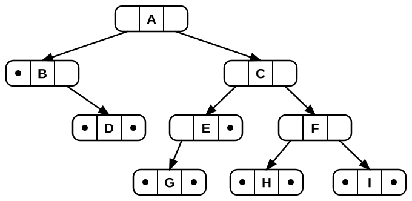

9.1 Binary trees
As we explained in the introduction, trees form a family of related structures. In a general tree, a node may have any number of children. The children may or may not have a meaningful order. Many applications fit that flexible model. But one special case is particularly important in data structures and algorithms: the binary tree.
A binary tree is either empty, or it consists of a root node with a value and exactly two children that are themselves binary trees. These two children are ordered. So we distinguish between the left child and the right child. It is common to say that a binary tree node has at most two children, but that description hides an important point. If a node has only one child, it matters whether that child is on the left or on the right. So it is often clearer to think of a binary tree node as always having a left subtree and a right subtree. Either subtree may be empty.
A binary tree is either empty or consists of a root node containing a value together with two ordered children, each of which is itself a binary tree. Because the children are ordered, we distinguish between the left child and the right child. Binary trees are often described as trees in which each node has at most two children. While this is correct, it can obscure an important detail: if a node has only one child, it matters whether that child is on the left or on the right. For this reason, it is often clearer to think of every node as having both a left subtree and a right subtree, with either subtree allowed to be empty. This idea is illustrated below.
The two drawings represent the same binary tree. In the left-hand drawing, the black dots make the empty subtrees explicit.
A node whose left and right subtrees are both empty is called a leaf node. Nodes that are not leaves are called internal nodes, or sometimes branches. In the figure above, the nodes containing D, G, H, and I are leaf nodes.
We will use the binary tree in Figure 9.3 as a running example throughout this chapter. Before continuing, take a moment to study it and consider the following questions: Which nodes are leaf nodes? What is the path from node A to node H? These questions will help you become familiar with the terminology and structure of binary trees.
9.1.1 Full, perfect, and complete binary trees
Several restricted forms of binary tree are sufficiently important to warrant special names. In a full binary tree, every node is either a leaf node or an internal node with exactly two non-empty children. A perfect binary tree is a full binary tree in which all leaves are at the same level. Equivalently, every level of a perfect binary tree is completely full. A complete binary tree has a shape obtained by starting at the root and filling the tree level by level from left to right. In a complete binary tree of height d, all levels except possibly level d are completely full. The bottom level is filled from the left side.
Figure 9.4 below illustrates the differences between full and complete binary trees. Neither property implies the other. A perfect binary tree satisfies both properties. In the figure, tree (a) is full but not complete, while tree (b) is complete but not full. A binary heap (see Section 9.5) is an example of a complete binary tree, while a Huffman coding tree is an example of a full binary tree.
Figure 9.4: Examples of restricted binary tree shapes: (a) is full but not complete, (b) is perfect and therefore both full and complete, and (c) is complete but not full.
9.1.2 Implementing binary trees
We continue and examine a way to implement nodes for a binary tree. By definition, each node has two children, although either or both may be empty. A node also typically stores a value, with the type depending on the application. The most common implementation therefore includes a value field and pointers to the two children.
Here is a simple implementation for binary tree nodes, which can store one single element in each node.
datatype Node of T:
value: T // Element for this node.
left: Node = null // Pointer to left child.
right: Node = null // Pointer to right child.Each Node object also has two pointers, one to the left
child and one to the right child. Thus, a Node object
represents not just a single node, but the root of a subtree. Figure 9.5 shows how the tree in
Figure 9.3 appears in memory, with
child pointers made explicit.

We can easily extend the Node type for different applications, for example by storing additional data in each node. It is sometimes convenient to add a pointer to the node’s parent, making it easy to move upward in the tree. This is somewhat analogous to adding a link to the previous node in a doubly linked list. In practice, however, a parent pointer is rarely necessary and increases the space overhead of the tree. The problem is not only the extra space. More importantly, reliance on parent pointers often reflects a poor understanding of recursion and can lead to weaker designs. If you find yourself wanting a parent pointer, it is worth considering whether there is a cleaner or more efficient approach.
Here is an example of a program using the node type defined above. It
computes the height of a tree. Since Node is a recursive data type, it
is often most natural to define functions on it recursively, with the
empty tree (null) as the base case.
height(node) -> Int:
if node is null:
return -1
return max(height(node.left), height(node.right)) + 1Study the code and convince yourself that height(A) in
Figure 9.5 will return the
value 3. Also consider how you would modify the code to compute size
instead of height.
Wrapper data type
Our final binary-tree datatype is a wrapper datatype, similar to the
linked-list implementations introduced in Section 6.2.1.
It stores a reference to the root node, initially null, and
can also maintain metadata such as the total size of the tree:
datatype BinaryTree:
root: Node = null
size: Int = 09.1.3 Traversing trees
Suppose we want to process the contents of a binary tree, for instance by printing all the values or converting the tree to a list. This is called a traversal There are many different ways we can do that, but these are three common patterns that differ in the order they process values:
- preorder: first process the value, then the left subtree, then the right
- inorder: first process the left subtree, then the value, finally the right subtree
- postorder: first process the left subtree, then the right, and finally the value
All of these are easily implemented using a simple recursive algorithm, here for printing the values:
preorder(n): inorder(n): postorder(n):
if n is null: if n is null: if n is null:
return return return
print(n.value) inorder(n.left) postorder(n.left)
preorder(n.left) print(n.value) postorder(n.right)
preorder(n.right) inorder(n.right) print(n.value)For our example tree (Figure 9.3), they will print the nodes in the following order:
| preorder | inorder | postorder |
|---|---|---|
| A B D C E G F H I | B D A G E C H F I | D B G E H I F C A |
It may not be immediately obvious that the procedures above produce
this order, but this can be checked by tracing them on paper. For
example, in postorder(A), the code makes it clear that
A is printed last. More generally,
postorder always prints both children before the parent, so an ordering
that prints C before either E or F is
not postorder.
Each traversal order is useful in different situations. For example, a preorder traversal is appropriate for the file system tree in Figure 9.2, because it can print each folder before the files and subfolders it contains. An inorder traversal appears naturally when printing the expression tree in Figure 9.6, since we first print the left operand, then the operator, and finally the right operand. A postorder traversal is useful when deleting the tree in Figure 9.5 and freeing its memory, because it processes the children before the parent.
9.1.4 Traversal without recursion
Some programming languages have poor support for recursion. It is possible to traverse a tree iteratively (using a loop) with a stack data structure. We call the stack our agenda, consider it a to-do list containing nodes that we need to process. Here is pseudocode that is structurally very similar to our recursive iterations, but instead of making recursive calls we add child nodes to the agenda and loop:
dfs(root): // dfs is for Depth-First Search
agenda = new Stack of Node
agenda.push(root) // Initially, we need to process the root
while agenda is not empty:
n = agenda.pop()
process(n)
agenda.add(n.right) // replaces the recursive call for n.right
agenda.add(n.left) // replaces the recursive call for n.leftThis code can be traced on a few example trees by recording the
contents of the agenda after each loop iteration and keeping track of
the order in which process is called on the nodes. The result is a
traversal that mimics a preorder recursive procedure. Note that moving
process(n) below the add operations has no effect on the
order in which nodes are processed. Implementing inorder or postorder
traversals with a stack is also possible, but considerably more
complicated.
By modifying the data structure from a stack to a queue (and switching the order in which children are added), we get a new traversal order. Try to figure out the pattern for this one:
bfs(root):
agenda = new Queue of Node // We use a queue instead of a stack
agenda.enqueue(root)
while agenda is not empty:
n = agenda.dequeue()
process(n)
agenda.add(n.left)
agenda.add(n.right)It will process the nodes level by level, left to right. That is it will first process the root, then all the children of the root, then all the children of those nodes et cetera. For Figure 9.3, it processes A,B,C,D,E,F,G,H,I in that order. This traversal order is called a Breadth-First Search (BFS) as opposed to the stack-based Depth-First Search (DFS). The naming is due to the tendency of DFS to process nodes that are deep in the tree early, whereas BFS always visits all closest nodes first.
BFS is useful for a wide range of applications. It is also a good example of the power of data structures: By changing the data structure of our agenda we can use the same or similar code to acchieve different useful behaviors.
As a reminder, here is the example tree again: